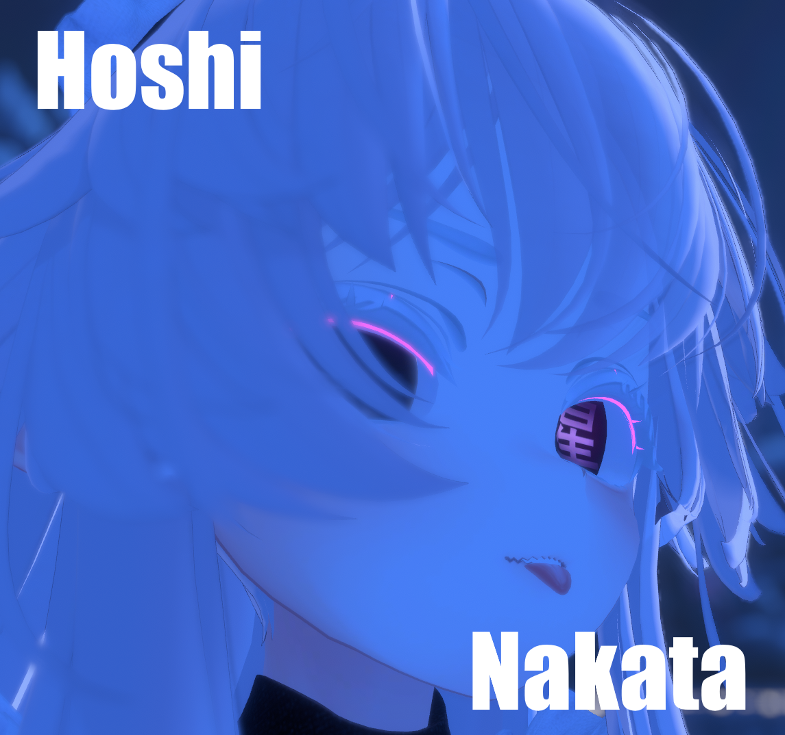
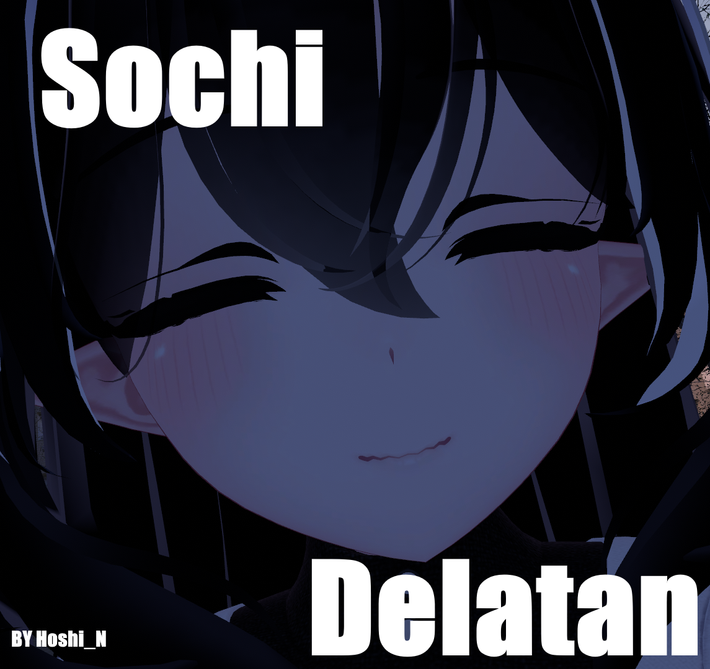
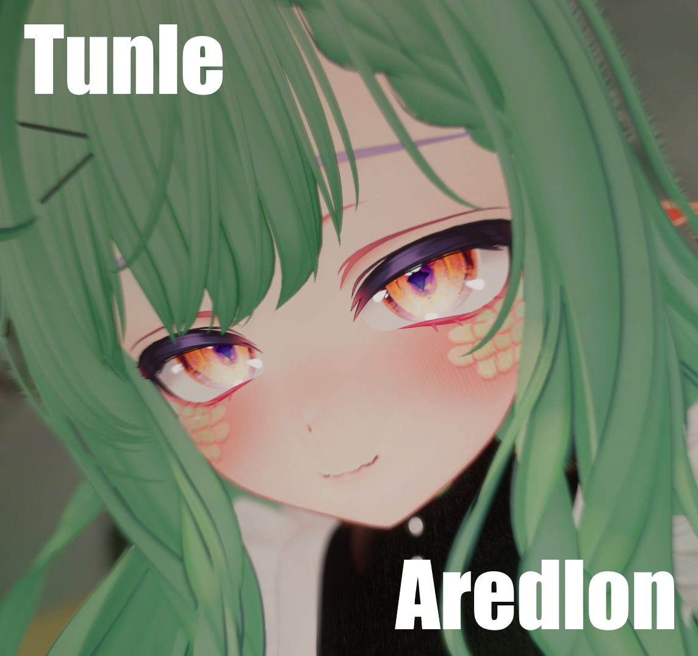

В общем доступе

Hoshi Nakata (Хоши Наката)
Хоши Наката — самая старая и загадочная дама, появившаяся, по легендам, из тени. На первый взгляд, она выглядит улыбчивой и доброй бабушкой, но за этой милой улыбкой скрываются тайны семидесятилетней жизни.

Sochi Delatan (Сочи Делатан)
Сочи Делатан — касатка и одна из служанок Качи Хосошино, обладающая стойкостью и харизмой. Она не из тех, с кем стоит обращаться легкомысленно.

Sunaga Nazaki (Сунага Назаки)
Сунага — жительница яркого и радостного подводного мира, где её дни были полны смеха и приключений с семьей.
